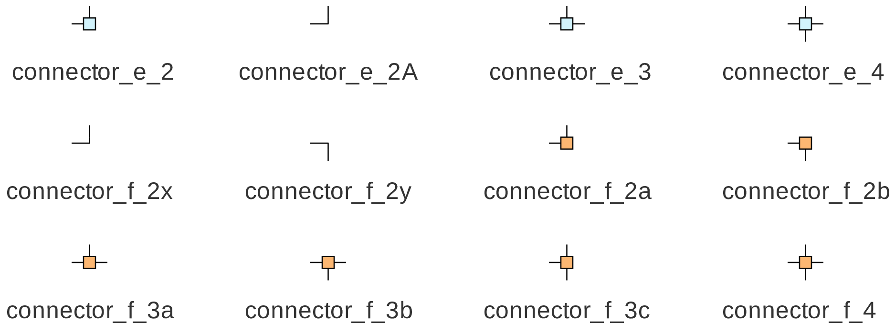

Blocks and ports¶
A GSEIM circuit schematic is made up of blocks (elements) with ports which are interconnected using connections (wires). A block has a core area and an appropriate number of ports arranged on the periphery of the core area. A few examples are shown below.
{kind=link}
Blocks can have two types of ports: flow-graph (orange) and electrical (blue). Flow-graph ports are directional, i.e., a flow-graph port is either an input port or an output port. A connection can be made between an input port and an output port, but not between two input ports or between two output ports. Electrical ports do not have input/output distinction; an electrical port can be connected to any other electrical port.
Most of the GSEIM blocks have only electrical ports or only flow-graph
ports. However, there are blocks such as voltmeter_fb (shown above)
which have electrical as well as flow-graph ports.
We will now look at some of the basic schematic entry operations. A detailed example to illustrate these operations will be presented in the Creatnig a new project section.
Bringing in a block¶
A new block can be brought into the canvas from the block tree panel
(on the right) by selecting and dragging. If the name of the block is
known, the Search for a block by name button in the menu bar
(or Ctrl f) can be used to locate the block in the block tree panel.
Note that a right click on a block name within the block tree panel shows
the document for that block. Alternatively, the document can be viewed
by right-clicking on the block (after bringing it into the canvas) and
selecting Show Document.
Moving/deleting/copying of blocks¶
After bringing in the required blocks into the canvas, we need to place them suitably and make connections as required by the circuit of interest. The following points are useful in that context. The reader is encouraged to start a new project, bring in a few blocks, and check out the various features being discussed here.
A block can be selected by left-clicking on the core part of the block (not its ports).
A group of blocks can be selected using click-and-drag.
The selected block(s) can be moved using the mouse.
The selected block(s) can be deleted by pressing the delete key or by clicking on the
Cutbutton in the menu bar or by right-clicking and choosingdeletefrom the drop-down menu.The selected block(s) can be copy/pasted in different ways.
Ctrl C/Ctrl V- using
Copy,Pastebuttons in the menu bar - right click \(\rightarrow\)
Copyand then right click \(\rightarrow\)Paste.
In each of the above options, the block(s) gets pasted at a fixed location in the GUI and can be moved from there to the desired location using the mouse. An alternative is to move the cursor to the desired location, right click \(\rightarrow\)
Paste selected. In this case, the selected block(s) appears at the cursor position.A block can be rotated through \(90^{\circ}\) clockwise or anticlockwise by clicking on the corresponding buttons in the menu bar.
Blocks have a property called
mirror. Its normal value isnone. If it is madevorh, the block is reflected around a vertical or horizontal mirror, respectively, that passes through its centre.Parameter values (such as resistance, capacitance) can be assigned to a block by double-clicking and entering the desired value in the entry box for that parameter. Note that, when a block is copied, the new block gets the parameter values of the old block.
If the cursor is made to hover over the core area of a block, the name of the block (assigned automatically by the GUI) appears as shown below for the dc source. The string before
$, viz.,vsrc_dcgives the type of this block, and the integer which appears after$(0 in this case) is the unique ID number assigned by the GUI to this specific instance ofvsrc_dc.If the cursor is made to hover over a port of a block, the name of the port appears as shown below (next to the inductor symbol).
A parameter value for a given block can be displayed as follows. Right click on the block \(\rightarrow\)
Show parameter\(\rightarrow\) Select the parameter of interest. The parameter value would appear next to that block. This entity is in fact just another block of typeshow_parameterand can be moved around like any other block.Sometimes, it is desirable to include a short comment (text box) in the canvas. This can be done by bringing in the
show_textblock, double-clicking on it, and entering the desired text in thetextfield.
{kind=link}
{kind=link}
Making connections¶
In GSEIM, the wiring (connection) process is identical to that in
its predecessor GNURadio. To connect port 1 and port 2, the user
clicks on port 1 and then on port 2. The wire shape is computed
by the GUI, and the wire is drawn. GNURadio allowed curved wires
whose shapes are computed using cubic Bezier splines. In GSEIM,
another option, viz., rectilinear wiring, is provided since that
is more appropriate for electrical circuit diagrams. The wiring
scheme for a given project can be selected by double-clicking on
the Options block in the canvas and assigning rectilinear
or curved to the wiring style parameter. Some examples
of curved and rectilinear wiring are shown in the following figure.
{kind=link}
{kind=link}
In the interest of neatness and clarity in wiring, it is a good idea to use connectors provided in the block tree panel. An example is presented in the following figure.
{kind=link}
Let (X, Y) denote a wire connecting port X and port Y. In Circuit 1 of the figure, we have made two connections: (A, D) by clicking on A and then on D, (B, C) by clicking on B and then on C. The wires drawn by the GUI in this case do not bring out the connections clearly. as they can be interpreted as any of the following sets of connections.
- (A, C), (A, D), (B, D)
- (A, C), (B, D), (B, C)
- (A, C), (A, D), (B, C), (B, D)
- (A, D), (B, C)
The first three cases amount to merging the four nodes into a single node, whereas the last case corresponds to two distinct nodes. Clearly, it would be desirable to move the wires suitably in order to bring some clarity in the connections. Currently, GSEIM does not allow moving of wires directly; however, with connectors, we can indirectly change the wire positions. In the present example, by using connectors, the wiring can be made unambiguous, as shown in Circuits 2 and 3. In Circuit 2, A is connected to D, and B to C, whereas, in Circuit 3, all four nodes are connected together.
The various connectors available in GSEIM are shown below. The
name of a connector starts with connector_e if it involves
electrical ports and with connector_f if it involves
flow-graph ports.
{kind=link}
Each connector is in reality simply a special case of a block, with a core area and two or more ports. The difference between connectors and other blocks is in the way their ports are rendered by the GUI. A port of a normal block appears as a blue (filled) square if it is an electrical port , and as an orange square if it is a flow-graph port. On the other hand, ports of a connector block are rendered not as filled squares but as straight line segments.
Note that the dashed boxes are included in the above figure only to demarcate the ports; they are not shown in the GUI. The following figure shows how the connectors would actually appear in the GUI.
{kind=link}
Bus connections¶
In some situations, such as 3-phase circuits, it is convenient to represent multiple wires with a single bus. GSEIM provides bus elements for bussifying, i.e., coalescing a bunch of wires (signals) into a single bus wire and de-bussifying, i.e., splitting a single bus wire into multiple wires. A few examples of bus elements are shown below.
{kind=link}
The bus ports are rendered in green in order to distinguish them from electrical and flow-graph ports. Bus connectors, bus sub-circuit pads, and bus tags are also provided in the GSEIM library. The user needs to ensure that bus connections made in the circuit are compatible. For example, a bus node representing three electrical wires should not be connected to a bus representing four electrical wires. Similarly, an electrical bus node and a flow-graph bus node should not be connected.
One example where buses substantially reduce clutter in the schematic is CMLI_5level_1.grc, a 5-level cascaded multi-level inverter circuit.